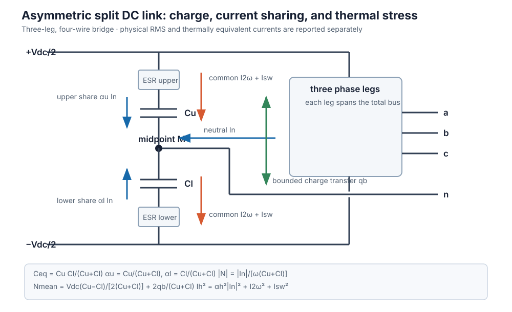

Advanced inverter
Kind: Component model · Maturity: experimental · Direction: forward · Temporal: single-snapshot
AdvancedInverter is a more detailed inverter-based-resource (IBR) than the BMOPFTools engine's built-in current-injection IBR. The engine models an IBR as a bounded current source at the point of connection (POC); this model adds the core structural idea from the BMOPFTools IBR model extensions design doc — an explicit internal AC node behind the converter — and the circuit and DC-link constraints layered on it. See the dedicated IBR chapter for the first-principles derivation and the maintained bibliography.
converter internal node -- Zc -- filter midpoint -- Zg -- POC bus
|
Rd + Cf
|
neutralThe midpoint and grid-side arm are optional. Without them the circuit reduces exactly to the original internal node behind one series primitive.
On top of that structure it carries sampled three-phase feasible-region models — 3-leg (3-wire), 4-leg, and 3-leg split-DC-link converters — whose DC-utilisation limit is an outer approximation of the continuous-time switching polytope, coupled to a first-order 2ω bus-ripple derating and neutral-current limits (see Three-phase topology models below).
It is built entirely on the BMOPFTools staged API through a model_hook!; it does not modify the engine. Device parameters are SI; the solve runs in SI (per_unit=false) or per-unit (per_unit=true), scaling every parameter to model units via opf_bases(ctx) — the DC-side quantities (v_dc, c_dc, In_max) stay SI and the AC↔DC coupling scales through the POC bus's v_base/i_base/s_base. Results are returned in SI in both modes.
The five phases
| Phase | Feature | Model |
|---|---|---|
| 0 | Output filter | reduced one-arm primitive, or explicit LCL with independent converter/grid primitive matrices, damped midpoint capacitor, distinct arm currents, and an optional POC shunt |
| 1 | Internal EMF / DC utilisation | ` |
| 2 | Grid-forming | balanced 120° internal EMF with a bounded magnitude decision variable; no droop, virtual impedance, or limiter dynamics |
| 3 | Converter losses | non-branching P_dc = P_ac + P_loss; fitted per-leg fixed/linear/quadratic terms include the fourth-leg neutral current for :FOUR_LEG |
| 4 | Double-frequency ripple | single-phase ripple-amplitude cap; three-phase topologies form a small-ripple 2ω bus-voltage phasor that derates the sampled DC rails (below) |
p_poc and q_poc are the total grid-side exchange. In particular, q_poc and q_set include the optional grid-side shunt; q_conv is the converter-side quantity before the filter and shunt.
Every feature is opt-in: with only id, bus, and s_max the device is a plain grid-following converter, and the internal node collapses onto the POC when the filter is zero.
modulation_max*v_dc/√3 is a retained scalar convention, not a derived full-bridge or half-bridge switching hull. A single-phase full bridge and half bridge have different DC-utilisation factors, so do not infer hardware feasibility from this cap until the bridge and modulation convention are made explicit. Also, for one sinusoidal phase |V I| = |S|; consequently p_ripple_max is only an oscillating-power amplitude bound and largely duplicates an apparent-power cap. It does not calculate capacitor voltage or RMS current without v_dc, c_dc, and a DC-source model.
Key modelling choices (from the design doc)
- Limits on the converter side. The total apparent-power circle
s_maxand optional per-phase current limiti_maxare applied on converter quantities (internal-node voltage × current), so an output filter reduces the power delivered at the POC. Under unbalance,s_maxalone is not a semiconductor thermal limit: supplyi_max, andIn_maxfor the fourth leg, from hardware ratings. In explicit LCL mode,i_grid_maxseparately protects the grid-side arm because midpoint capacitor current makesi_mag != i_grid_mag. - Non-branching losses. With AC power positive = injected to grid and DC power positive = drawn from the DC source, the single equation
P_dc = P_ac + P_loss(P_loss ≥ 0) holds for both discharge and charge — no directionif-branch. - Grid-forming ≠ slack. A grid-forming inverter holds a balanced, bounded internal EMF behind the filter, but does not replace the network's reference; the surrounding grid still needs a slack source.
Reduced series filter versus explicit LCL
The original r_filter/x_filter parameters now describe the converter-side arm. The reduced model remains active when every grid-side parameter and c_filter_mid are zero. Supplying a grid-side arm or midpoint capacitance creates the explicit circuit:
lcl = AdvancedInverter(
id = "inv",
bus = "poc",
s_max = 5_000.0,
r_filter = 0.05,
x_filter = 0.10,
r_filter_grid = 0.05,
x_filter_grid = 0.10,
c_filter_mid = 20e-6,
r_filter_damping = 1.0,
i_max = 25.0,
i_grid_max = 25.0,
)Each series arm may instead use its own primitive matrices, with conductor order phase_terminals followed by neutral. The capacitor is a per-phase phase-to-neutral branch and r_filter_damping is in series with it. Inspect v_filter_mag, i_mag, i_grid_mag, i_filter_shunt_mag, p_filter_loss, and filter_resonance_hz together.
filter_resonance_hz is the undamped scalar estimate derived from the two positive arm reactances and c_filter_mid. It returns NaN for matrix-valued filters because those require modal analysis. The optimisation still evaluates only the specified fundamental f; it does not solve a frequency sweep or establish closed-loop stability.
Worked example
using PowerOptLab
using BMOPFTools: parse_bmopf
# A stiff grid: slack at "grid", short line to the inverter POC.
net = parse_bmopf("""
{"bus":{
"grid":{"terminal_names":["1","n"],"perfectly_grounded_terminals":["n"]},
"poc": {"terminal_names":["1","n"],"perfectly_grounded_terminals":["n"],"v_min":[200.0],"v_max":[250.0]}},
"voltage_source":{"vs":{"bus":"grid","terminal_map":["1"],"v_magnitude":[230.0],"v_angle":[0.0]}},
"linecode":{"lc":{"R_series_1_1":0.05}},
"line":{"l1":{"bus_from":"grid","bus_to":"poc","terminal_map_from":["1"],"terminal_map_to":["1"],"linecode":"lc","length":1.0}}}
"""; from_string=true)
# A converter with an output filter and a three-term loss curve; minimise loss
# while delivering 3 kW to the grid.
inv = AdvancedInverter(id="inv", bus="poc", s_max=5000.0,
r_filter=0.2, x_filter=0.5,
p_loss_fixed=20.0, a_loss=0.3, c_loss=0.02)
r = solve_advanced_inverter(net, inv; objective=:min_loss, p_set=3000.0)
r.p_poc # ≈ 3000 W delivered at the POC
r.q_poc # total POC reactive exchange, including any grid-side shunt
r.p_conv # converter-side active power (> p_poc: filter losses)
r.p_loss # 20 + 0.3·|I| + 0.02·|I|²
r.p_cap_loss # optional frequency-weighted capacitor ESR loss
r.p_dc # = p_conv + p_loss + p_cap_loss (non-branching DC-link balance)
r.v_int_mag # internal EMF magnitude per phase (V)
r.p_filter_loss # passive filter/damping loss between converter and POC (W)Switch objective=:max_export to maximise POC active power and watch the converter rating, filter, EMF/modulation, or ripple limits bind. For a three-phase grid_forming=true inverter the solved internal EMF magnitudes are equal across phases (balanced 120°) and the 2ω ripple is ≈ 0.
Choosing a three-phase topology
Set topology to one of :THREE_LEG, :FOUR_LEG, or :SPLIT_DC (with v_dc, c_dc, and an appropriate neutral limit for the 4-wire ones) to use the sampled switching-polytope model:
inv = AdvancedInverter(id="inv", bus="poc", phase_terminals=["a","b","c"], neutral="n",
topology=:FOUR_LEG, s_max=20e3, i_max=40.0,
v_dc=700.0, c_dc=1.1e-3, In_max=40.0, m_max=0.96,
r_filter=0.05, x_filter=0.15)
r = solve_advanced_inverter(net3, inv) # net3 = a three-phase grid
r.i_neutral # neutral current (A) — non-zero only under unbalance
r.i_zero # zero-sequence current (A); i_neutral ≈ 3*i_zero
r.i_negative # negative-sequence current (A)
r.dv2 # 2ω bus-ripple amplitude (V) that derated the DC rails
r.dv_mid # split-link midpoint ripple RMS (V; zero for this 4-leg example)
r.i_cap # physical capacitor RMS ripple current (A)
r.i_cap_thermal # thermally weighted current (A) — compare against the ratingOn a balanced grid, away from a modulation boundary, all three can produce the same fundamental operating point (no neutral current and no 2ω ripple). Under unbalance the 4-leg and split-DC draw neutral current (bounded by In_max and/or the split-link capacitor budget), and the split-DC needs a higher v_dc for the same per-phase voltage — the half-bus utilisation penalty of the split-capacitor structure.
See the API reference for AdvancedInverter, solve_advanced_inverter, and InverterResult.
Scope
This is an experimental circuit-aware model, not a vendor-validated engine feature. It implements the design doc's Phases 0–4 plus the three-phase topology models as a hook-stamped device; reactive/active priority state machines, grid-forming-as-reference capability, and dynamic control/fault models are not included. If a piece of this matures, it can be folded back into the engine.
The model is a fundamental-frequency steady-state capability model with derived line-frequency midpoint and double-line-frequency DC-link quantities. An optional carrier-level audit reconstructs ideal PWM switch states from the solved fundamental phasors; it is not a switched network solver, harmonic power flow, averaged dynamic model, impedance scan, or EMT model.
Literature map and fidelity boundary
| Source result | Mapping in AdvancedInverter | Important boundary |
|---|---|---|
| Heidari and Geth, improved algebraic inverter modelling, Eqs. (2)–(20), (36)–(37) | internal voltage, primitive four-conductor filter KVL, POC/internal power, 3-leg zero-sequence restriction, sequence-current limits, and balanced GFM voltage | the extension adds a passive LCL midpoint, but not controller dynamics or a modal impedance scan |
| Same paper, Tables 1–3 | topology and GFM/GFL concepts | Volt-var/Watt, droop, power sharing, constant-PF, and sequence-current controls are not part of this advanced device |
| Deakin, Heidari, and Deng, DC-link ripple in OPF, Eqs. (5), (11), and (18) | unconjugated S̃ = Σ U_x I_x, bus-ripple phasor, and capacitor-current conversion | assumes fundamental sinusoidal phasors, a stiff mean V_dc, small ripple, and a DC source that contributes negligibly at 2ω |
| Deakin et al., capacitor ripple constraints, Eqs. (4)–(9) | simultaneous allocation of midpoint neutral current, 2ω current, and i_sw, generalized here to unequal half-banks and ESR-ratio weights | the paper's hybrid 4-leg plus split-link return path and reconfigurable leg allocation are not represented |
| Liang et al., split-link voltage utilisation | half-bus limit and the familiar split-link utilisation penalty | bounded mean charge correction is algebraic; dynamic active balancing, third-harmonic offset injection, common-mode/EMC effects, dead time, and overmodulation are omitted |
| Mandrioli et al., four-leg DC-link switching ripple, especially Eqs. (40) and (42) | shared-carrier switching reconstruction, DC-link switching-current RMS, voltage ripple, and balanced SPWM/centered-PWM regression formulas | currents and references are frozen over each ideal carrier period; dead time, device drops, sampling delay, overmodulation, and thermal dynamics are omitted |
| Vujacic et al., three-leg DC-link switching ripple | optional series R–L DC-source branch in parallel with the link capacitor, harmonic KCL, source-current/loss diagnostics, and the high-source-impedance limit | the implementation generalizes the paper's balanced centered-PWM setting but uses a constant R–L spectrum rather than a measured battery/DC-stage impedance |
| Hammami et al., split-capacitor input-voltage ripple | split-link series-equivalent capacitance, finite-source current sharing, and individual upper/lower switching-voltage ripple | the implemented split-link audit admits sinusoidal PWM only and is a numerical reconstruction, not the paper's complete closed-form modulation/load-angle map |
| Mandrioli et al., split-capacitor phase and neutral current ripple, Eqs. (15), (27) | phase/neutral AC-ripple regression formulas and the 1/(Lf_sw) scaling oracle | formulas assume balanced voltage references, SPWM, independent phase inductors, and negligible high-frequency resistance |
| Viatkin et al., four-leg AC ripple with a neutral inductor, generalized in Energies 16, 1710 | phase/neutral switching ripple, arbitrary neutral-to-phase inductance ratio, and carrier common-mode effects; generalized here by solving each harmonic through the primitive L/LCL circuit | frozen-duty local spectra omit asynchronous long-record sidebands, dead time, frequency-dependent magnetics, common-mode earth paths, and a non-stiff high-frequency grid |
These boundaries matter when interpreting parameters:
:SPLIT_DCmeans a three-leg, four-wire split-capacitor bridge. It does not mean the four-leg-plus-split-link hybrid in the 2026 paper.- Both LCL series arms retain conductor mutual coupling and the midpoint branch includes physical series damping. The optimisation is fundamental-frequency; the optional PWM audit re-evaluates the same constant R/L/C primitives at carrier harmonics. Frequency-dependent winding/core loss, capacitor ESR/ESL, controller impedance, and broadband modal conditions remain outside it.
grid_forming=truemeans a balanced positive-sequence internal voltage in one steady-state snapshot. It does not claim black-start, synchronization, fault-ride-through, or current-limited transient behavior.- The fitted loss curve includes the neutral leg for
:FOUR_LEG, but applies the same linear/quadratic coefficients to every included leg. The loss is averaged and does not add a time-varying loss component toS̃or the DC-link ripple. i_swremains an independent fixed RMS reserve. Withpwm_strategy=:SPWMor:CENTERED, an ideal shared-carrier audit additionally predicts switching RMS current and closes a conservative operating-point-dependent reserve around the smooth NLP. The capacitor weights and ESR parameters estimate thermal loading and mean loss; ESR/ESL are not stamped as frequency-dependent electrical impedances and no capacitor temperature is solved. Dead time, semiconductor voltage drops, junction temperature, discontinuous/overmodulation strategies, and detailed impedance spectra require separate data or a higher-frequency model.
Further literature for the next model layer
The curated and maintained list is now in IBR references.
- Ziyat, Wang, and Palmer, voltage ripple and capacitor sizing for power redistribution: split-link midpoint dynamics and capacitor sizing remain the primary independent source for validating unequal operating cases and extending the present quasi-static charge model to time-domain balancing dynamics.
- Mandrioli, Hammami, and Viatkin's DC-link, split-link, and neutral-inductor papers now anchor both implemented carrier audits. The 2023 generalized arbitrary-PWM formulation identifies discontinuous PWM, third-harmonic injection, and broader experimental sweeps as the next modulation layer.
- Liserre, Blaabjerg, and Hansen, LCL filter design and control: required before calling a two-element fundamental model an LCL filter or making resonance claims.
- Sun, impedance-based inverter-grid stability, and Rygg et al., frequency-coupled sequence impedance: the natural starting point for a genuinely frequency-domain, control-aware representation beyond the fundamental phasor.
- The NREL-led grid-forming inverter research roadmap: use its voltage control, protection, fault ride-through, and validation gaps to keep the steady-state
grid_formingflag distinct from dynamic GFM claims.
Three-phase topology models
For the three-phase topologies (:THREE_LEG, :FOUR_LEG, :SPLIT_DC) the crude scalar modulation cap is replaced by time-sampled switching-polytope feasibility (fundamental-frequency RMS phasors). The continuous-time switching hull is exact for an ideal two-level bridge; enforcing it only at n_samples angles is an outer approximation, and coupling the rail to D additionally uses the small-ripple DC-link approximation below. All constraints apply to the converter output U_x = V_int_x (the internal node), so the filter, losses, grid-forming, and s_max circle all compose. The equations below are what the code stamps (shown in SI; per-unit is the same after base scaling).
Oscillating (2ω) power. The unconjugated phase sum
\[\tilde S = \sum_{x\in\{a,b,c\}} U_x\, I_x,\qquad \tilde S_{re} = \textstyle\sum_x (U^{re}_x I^{re}_x - U^{im}_x I^{im}_x),\;\; \tilde S_{im} = \textstyle\sum_x (U^{re}_x I^{im}_x + U^{im}_x I^{re}_x)\]
is the sinusoidal amplitude of the double-frequency power pulsation the DC-link capacitance absorbs. This is an unconjugated product; ordinary complex power uses the conjugated product U_x I_x^*. The ripple link is bilinear, and other optional features add further nonlinear/nonconvex constraints.
Bus-ripple phasor. With DC capacitance C_eq (monolithic link C_eq = C_dc; split half-banks give C_eq = C_u C_l/(C_u+C_l)), the 2ω bus voltage ripple is a phasor D = j\,\tilde S/(2\omega C_{eq} V_{dc}), i.e.
\[D_{re} = -\tilde S_{im}/(2\omega C_{eq} V_{dc}),\qquad D_{im} = \tilde S_{re}/(2\omega C_{eq} V_{dc}),\]
giving the instantaneous DC rail v_{dc}(\theta) = V_{dc} + D_{re}\cos2\theta - D_{im}\sin2\theta. An optional dv2_max caps \sqrt{D_{re}^2+D_{im}^2}. The derivation neglects the DC-source 2ω response and higher-order products, so it should not be treated as exact at large |D|/V_dc.
Sampled voltage feasibility. Over a uniform grid θ_k = 2π(k-1)/N (N = n_samples, default 36), both signs, with m = m_max ∈ (0,1] as a utilisation factor on the ideal switching hull:
- 3-leg (3-wire) — pairwise line-to-line references must fit the bus, and no zero-sequence current flows:
\[\pm\sqrt2\big[(U^{re}_x-U^{re}_y)\cos\theta_k - (U^{im}_x-U^{im}_y)\sin\theta_k\big] \le m\,v_{dc}(\theta_k),\quad (x,y)\in\{ab,bc,ca\};\qquad \textstyle\sum_x I_x = 0.\]
- 4-leg — the fourth leg is a movable reference, so the pairwise conditions hold plus each phase against the neutral leg, and the neutral current is limited by the 4th-leg rating:
\[\pm\sqrt2\big[U^{re}_x\cos\theta_k - U^{im}_x\sin\theta_k\big] \le m\,v_{dc}(\theta_k); \qquad |I_n| = \Big|\textstyle\sum_x I_x\Big| \le I_{n,\max}.\]
- split-DC (4-wire) — each phase is an independent half-bridge against the capacitor midpoint. With
CΣ=C_u+C_l, the fundamental midpoint rippleN = I_{ret}/(j\omega CΣ)(whereI_{ret} = \sum_x I_x) and signed mean offsetN̄merge into the phase referenceW_x = U_x + N + N̄:
\[\pm\left(\sqrt2\big[(U^{re}_x+N_{re})\cos\theta_k - (U^{im}_x+N_{im})\sin\theta_k\big]+\bar N\right) \le \tfrac{m}{2}\,v_{dc}(\theta_k);\qquad \underbrace{|I_n| \le I_{n,\max}}_{\text{optional — see below}},\]
Here the standalone I_{n,\max} bound is optional: the split link's neutral current flows through the capacitors, so supplying i_cap_max bounds it through the thermal budget instead (and then |I_n| \le 2\,i_{cap,max}). One of the two is required. (:FOUR_LEG always needs I_{n,\max} — its neutral goes through the fourth leg, which the capacitor budget says nothing about.)
with N_{re} = -I^{im}_n/(\omega C_\Sigma), N_{im} = I^{re}_n/(\omega C_\Sigma). If the series banks have equal stored charge, their natural mean offset is N̄_nat = V_dc(C_u-C_l)/(2C_\Sigma). Optional charge transfer gives N̄=N̄_nat+2q_mid_balance/C_\Sigma, subject to q_mid_balance_max and v_mid_mean_max. The factor of two on the rail is the half-bus constraint. For a balanced set, the pairwise switching hull limits the 3-leg/4-leg bridge first, so the split link needs 2/√3 ≈ 1.155 times their total DC voltage, not twice as much.

The split link's half-banks carry the fundamental neutral current and the 2ω bus current. They are at different frequencies, so they combine in RMS and must be allocated simultaneously — the bank rating is not all available for neutral current:
\[\alpha_h^2|I_n|^2 + I_{2\omega,rms}^2 + I_{sw,rms}^2 \le I_{h,rated}^2, \qquad I_{2\omega,rms} = \frac{|\tilde S|}{\sqrt2\,V_{dc}}\]
where α_u=C_u/(C_u+C_l) and α_l=C_l/(C_u+C_l). For equal banks, In_max = 2·√(I_half_rated² − I_2ω,rms² − I_sw,rms²). Passing the raw bank rating double-counts the capacitors. Example: equal 12 A half-banks at |S̃| = 6.6 kVA and V_dc = 800 V gives I_2ω,rms = 5.8 A, hence In_max ≈ 21 A, not 24 A.
The exact heating statement is Σ_k ESR(f_k,T)·I_k² ≤ P_diss,max. cap_thermal_weights=(w_n,w_2ω,w_sw) implements ESR ratios relative to a selected rating/reference frequency. The default (1,1,1) is the original unweighted RMS approximation. Use manufacturer frequency and temperature data; do not treat the weights as universal capacitor constants.
Capacitor ripple current: endogenous allocation (i_cap_max)
Rather than pre-computing In_max by hand, supply the bank's thermally equivalent current rating as i_cap_max (per half-bank for :SPLIT_DC, the whole DC-link bank otherwise) and let the solve make the allocation at the operating point. For equal banks and default weights:
\[\underbrace{\Big(\tfrac{|I_n|}{2}\Big)^2}_{\texttt{:SPLIT\_DC}\ \text{only}} + \; I_{2\omega,rms}^2 \; + \; i_{sw}^2 \;\le\; i_{cap,max}^2 , \qquad I_{2\omega,rms} = \frac{|\tilde S|}{\sqrt2\,V_{dc}} = k\,|D|, \quad k = \frac{2\omega C_{eq}}{\sqrt2}\]
For unequal banks, replace |I_n|/2 by α_u|I_n| and α_l|I_n| and enforce both inequalities. i_cap_upper_max and i_cap_lower_max can represent unequal ratings and compose with the common i_cap_max.
Note I_{2ω,rms} = |\tilde S|/(\sqrt2 V_{dc}) is independent of C: capacitance sets the ripple voltage, not the ripple current. result.i_cap reports the larger physical RMS current. result.i_cap_thermal applies cap_thermal_weights and is the quantity that compares directly against the rating. Upper/lower physical and thermal currents are available separately.
Some papers report the 2ω current phasor amplitude |\tilde S|/V_dc and then compare Fourier magnitudes. PowerOptLab's i_cap is a time-domain physical RMS quantity, hence the explicit division by √2; i_cap_thermal is a weighted rating proxy. Convert conventions before comparing a paper table or datasheet.
The neutral term appears only for the split link, whose half-banks sit in the neutral path; the 4-leg's neutral current flows through its fourth leg, so its bank carries the 2ω component alone. Writing I_{2ω,rms} through the ripple phasor D (rather than the bilinear \tilde S) keeps the constraint quadratic in variables the model already has. i_sw optionally reserves an independent constant allowance, for unmodelled spectral content or a conservative design margin.
Carrier-level PWM closure
Set pwm_strategy=:SPWM or :CENTERED and provide f_sw to reconstruct all leg switch states against one shared triangular carrier. The audit subtracts the carrier-period average from the instantaneous DC current, so correlation between legs is retained. A sequential outer loop updates a current-norm majorant until the capacitor reserve covers that operating point:
pwm_inv = AdvancedInverter(; id="inv", bus="poc",
phase_terminals=["a", "b", "c"], neutral="n",
topology=:FOUR_LEG, s_max=20e3, v_dc=800.0, c_dc=3e-3,
i_cap_max=12.0, f_sw=10e3, pwm_strategy=:CENTERED)
r = solve_advanced_inverter(net, pwm_inv)
@show r.i_cap_switching r.i_cap_switching_reserved r.pwm_reserve_margin
@show r.dv_switching_rms r.dv_switching_pp r.pwm_modulation_margin
@show r.pwm_iterationsi_cap_switching is the post-solve carrier prediction; i_cap_switching_reserved is the conservative current actually present in the smooth capacitor constraint. Require a non-negative pwm_reserve_margin before publishing the point. dv_switching_rms and dv_switching_pp use the physical bank capacitance and f_sw; pwm_modulation_margin is the minimum duty-cycle headroom. The manual i_sw term remains separate and combines in quadrature.
When the upstream DC system is not effectively open at carrier frequencies, supply its local series R–L approximation and a Fourier bandwidth:
finite_dc = AdvancedInverter(; id="inv", bus="poc",
phase_terminals=["a", "b", "c"], neutral="n",
topology=:SPLIT_DC, s_max=20e3, v_dc=800.0, c_dc=3e-3,
c_dc_upper=2.5e-3, c_dc_lower=3.5e-3, i_cap_max=15.0,
f_sw=10e3, pwm_strategy=:SPWM,
pwm_dc_source_r=0.08, pwm_dc_source_l=80e-6,
pwm_dc_harmonics=96, pwm_carrier_samples=256)
r = solve_advanced_inverter(net, finite_dc)
@show r.i_dc_bridge_switching_rms r.i_cap_switching
@show r.i_dc_source_switching_rms r.p_dc_source_switching_loss
@show r.dv_switching_upper_rms r.dv_switching_lower_rms
@show r.pwm_dc_network_marginThe reported harmonic currents satisfy DC-node KCL frequency by frequency. Unretained bridge-current energy is assigned to the capacitor for conservative thermal closure; source current and switching voltage contain the retained series. Require a finite positive pwm_dc_network_margin and demonstrate convergence in pwm_dc_harmonics/pwm_carrier_samples. A value near zero flags parallel cancellation between source inductance and link capacitance, not a certified small-signal stability margin. Source resistance loss belongs to the upstream DC network and is therefore reported separately from p_dc.

:SPLIT_DC currently supports :SPWM because the physical capacitor midpoint fixes its zero reference. The 3-leg and 4-leg models also support centered continuous PWM through common-mode injection. Direct hook stamping deliberately does not run the outer iteration: either use this convenience solver or supply an audited pwm_current_factor with pwm_strategy=:NONE.

AC switching ripple through L and LCL filters
Enable pwm_ac_ripple=true when the supplied filter inductances are meaningful at the switching frequency:
ac_pwm = AdvancedInverter(; id="inv", bus="poc",
phase_terminals=["a", "b", "c"], neutral="n",
topology=:FOUR_LEG, s_max=20e3, i_max=35.0, In_max=25.0,
v_dc=800.0, c_dc=3e-3, i_cap_max=20.0,
r_filter=0.04, x_filter=0.08,
r_filter_grid=0.03, x_filter_grid=0.12,
c_filter_mid=20e-6, r_filter_damping=1.0, i_grid_max=35.0,
f_sw=10e3, pwm_strategy=:CENTERED, pwm_ac_ripple=true)
r = solve_advanced_inverter(net, ac_pwm)
@show r.i_ac_switching_rms r.i_grid_switching_rms
@show r.i_filter_shunt_switching_rms r.i_neutral_switching_rms
@show r.i_ac_total_rms r.i_grid_total_rms r.i_neutral_total_rmsThe audit Fourier-expands the correlated pole-voltage error and solves every retained carrier harmonic through the full conductor primitive. Consequently, neutral inductance and mutual coupling affect all phase currents, while an explicit LCL model distinguishes converter-arm, midpoint-capacitor, and grid-arm stress. The sequential solve reserves the predicted switching RMS inside i_max, i_grid_max, and In_max; corresponding *_reserved results must cover the predicted values within tolerance.
pwm_ac_harmonics controls Fourier truncation. Increase it together with pwm_carrier_samples and demonstrate convergence for boundary studies. The reported *_pp values reconstruct the retained carrier series and are therefore especially sensitive to truncation. The current audit does not include the separate POC shunt b_filter_shunt, which is a fundamental-frequency compatibility element rather than a specified physical high-frequency branch.

i_cap_max composes with In_max; whichever binds, binds. For :SPLIT_DC it may also be supplied instead of In_max — the bank rating bounds |I_n| on its own. (:FOUR_LEG always needs In_max: its neutral current flows through the fourth leg, whose device rating is unrelated to the capacitors.) The solved bank currents and thermal equivalents are reported, so you can see which limit governed:
r = solve_advanced_inverter(net, AdvancedInverter(; id="inv", bus="poc",
phase_terminals=["a","b","c"], neutral="n", s_max=20e3,
topology=:SPLIT_DC, v_dc=800.0, c_dc=2.8e-3, i_cap_max=12.0))
r.i_cap # capacitor RMS ripple current (A) vs the 12 A rating
r.i_cap_thermal # thermally equivalent current used by the rating constraint
r.i_neutral # what was left for neutral current after the 2ω shareThis is the model-side statement of the sizing rule above: tightening i_cap_max on a split link visibly trades away neutral capability, while on a 4-leg it only reduces the bus ripple.
Current limits are per-phase |I_x| \le i_{max} and the neutral limits above. With AC PWM closure enabled, each becomes a total-RMS constraint such as $|I_x|^2+I_{x,sw}^2\le i_{max}^2$; the fundamental-only interpretation is retained when pwm_ac_ripple=false. Optional i_zero_max, i_positive_max, and i_negative_max independently bound the Fortescue RMS components. For a four-wire connection the reported values satisfy i_neutral ≈ 3*i_zero; a 3-wire topology enforces i_zero = 0 through KCL. dv_mid_max can additionally cap the split-link RMS midpoint ripple |I_n|/(ω(C_u+C_l)); v_mid_mean_max separately limits the unequal-bank mean offset after any bounded q_mid_balance_max correction. The sampling makes these outer approximations and converges as N→∞. There is no documented uniform error certificate for the endogenous-ripple case; repeat boundary studies with a denser grid. result.switching_margin is the minimum rail headroom in volts on a separate post-solve grid of at least 3600 angles. A negative value is a concrete between-sample violation and should reject the point; a positive value is a dense numerical audit, not a formal global certificate. Every per-sample voltage constraint is linear in the phasor variables and ripple auxiliary D, while the ripple link and other optional device features make the full model a smooth NLP (Ipopt).